Locate the active strikes.
Read Call and Put volume as a continuous heatmap across the selected rolling window. Brightness is relative to activity in that window.
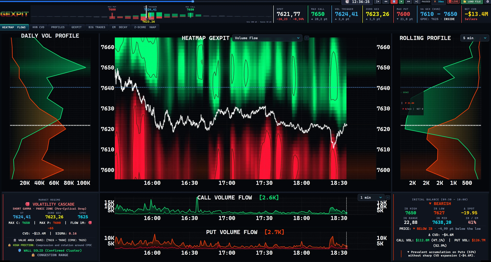
Track Call and Put flow, explore GEX heatmaps, and see where recent volume is building.
Built by a trader for SPX options and ES futures traders who want to put price in context.
Recorded platform demonstration. Explore the tools below, then watch complete sessions on YouTube.
Start with a question. Open the view that helps you examine it. Go deeper when you need the detail.
Explore 26 screenshots from the updated platform. Each view explains a different part of the session. The two demonstration videos show an earlier interface.
Separate Call and Put volume across strike and time.
Explore flow → 02 / RECENT VOLUMECompare a rolling window with the full session.
Compare volume → 03 / DYNAMIC GEXTrack modeled exposure as spot and time evolve.
Examine GEX → 04 / REPLAYRevisit a recorded sequence and examine each step.
See replay →Read activity across strike and time while keeping spot in view.
Start with Combined Volume: bubbles place Call and Put activity at each strike and time, alongside spot. Then switch views to compare dominance, overlapping activity or modeled Gamma.
Choose from 16 heatmap modes. Gamma views include GEX Linear, GEX Rolling, Wall Activity, GEX Velocity, GEX Absolute, Wall Absorption (GEX/Vol) and Charm Pressure (0DTE Pin). Volume views include Combined Volume, Volume Flow, Smooth Flow, Dominance, Delta Dominance, Duel, Call Only, Put Only and Dual Panels.
Dedicated Call and Put flow views offer contract, premium-notional and Delta-weighted metrics, plus moneyness filters. Different modes answer different questions: volume and modeled exposure are not the same measure.
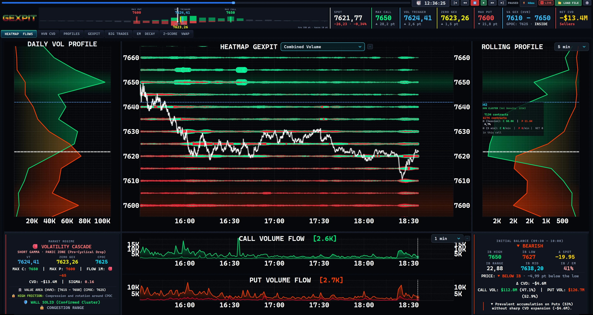
Compare dominance, overlap and separate Call / Put activity while keeping the same market context.
Select a view. Click or tap the image to enlarge it.
Read Call and Put volume as a continuous heatmap across the selected rolling window. Brightness is relative to activity in that window.

A smoothed view makes the distribution easier to follow across strikes and time. Smoothing changes the display, not the underlying observations.
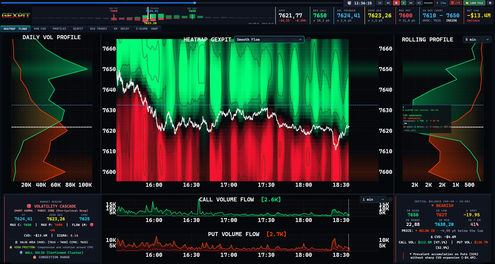
Compare Call and Put activity in the same map: green marks Call dominance and red marks Put dominance. This is a volume comparison, not a buy or sell instruction.
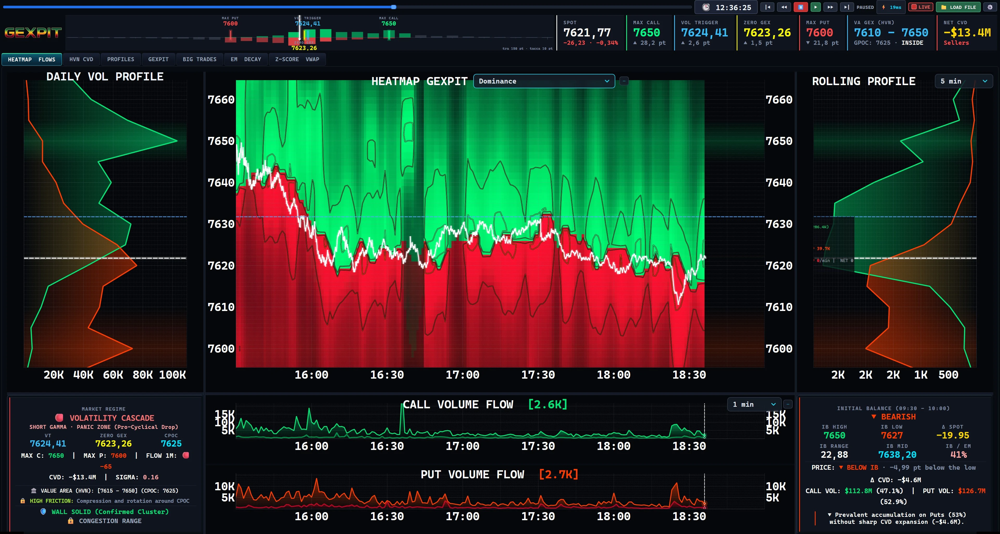
Weight option volume by absolute Delta to compare activity on a different basis. Read it alongside unweighted Dominance to see how the picture changes.
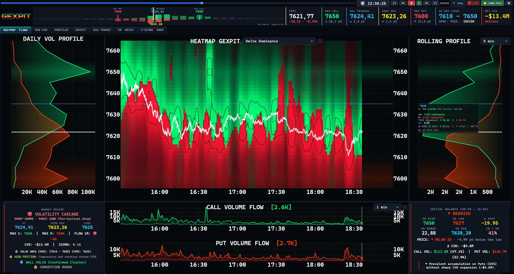
Duel highlights overlapping Call and Put volume using the smaller of the two. A bright area means both are active; green here does not mean Call dominance.
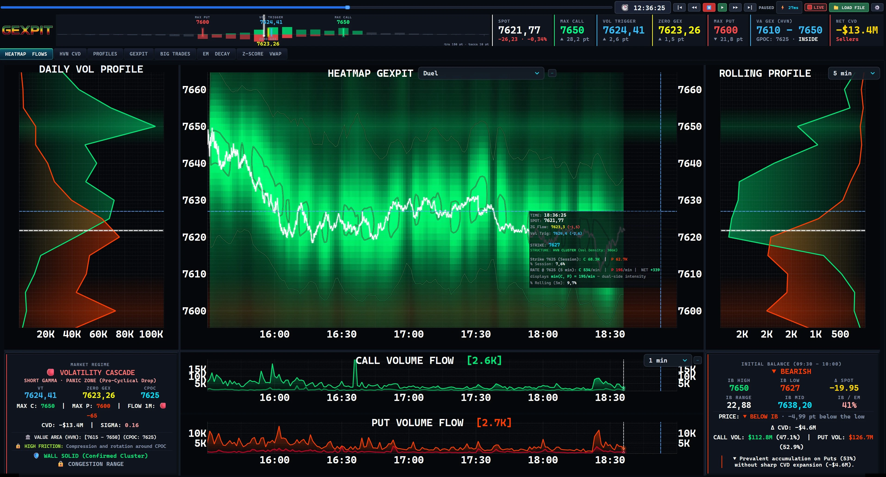
Remove the Put layer and inspect where Call volume concentrates. Keep price, the daily profile and the rolling profile in view.
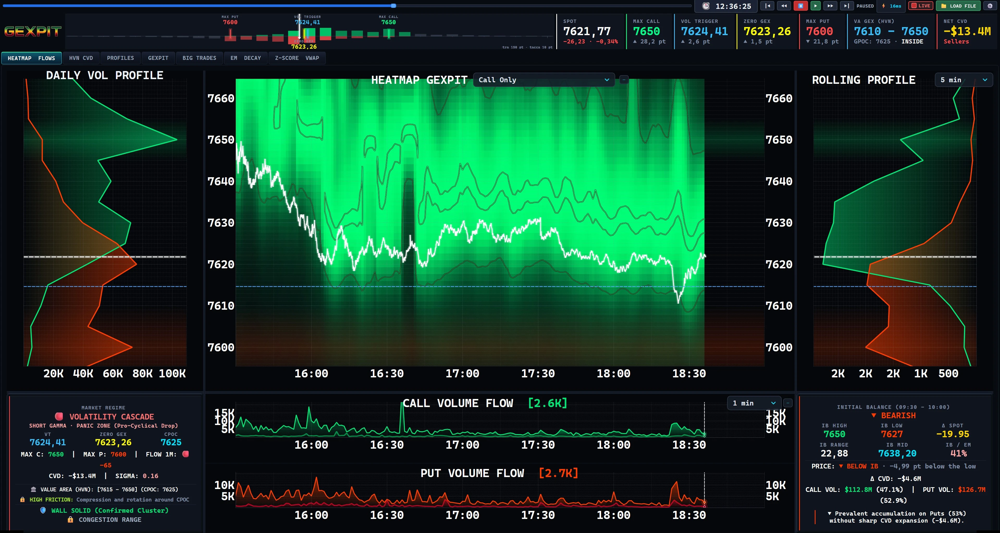
Examine Put activity on its own to locate concentrations that can be harder to read in a combined view.
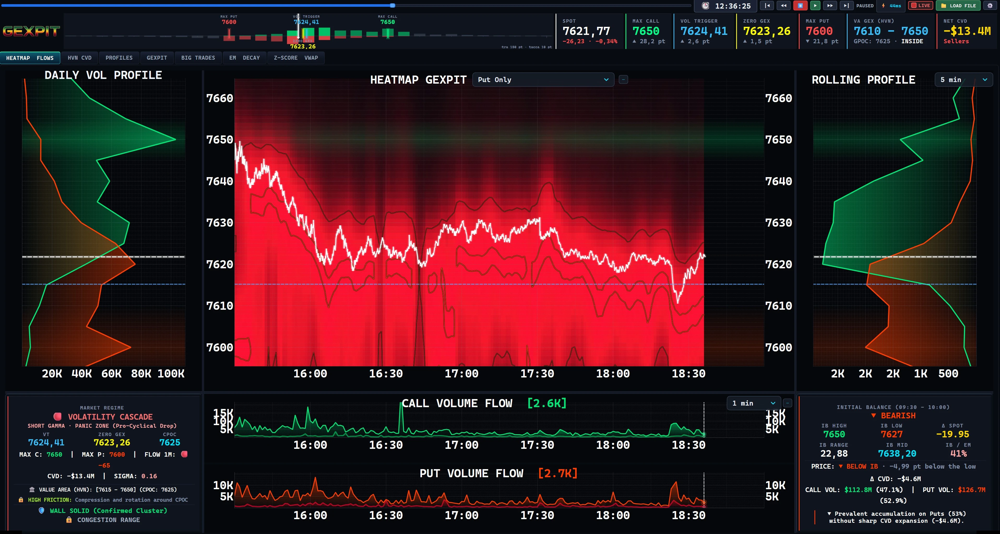
Two synchronized heatmaps separate the sides while keeping a shared color reference. Compare their intensity at the same strike and time.
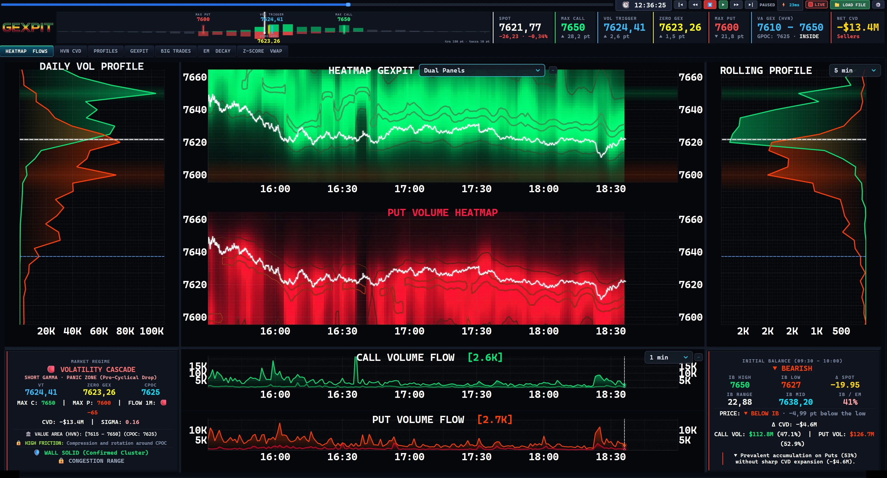
Choose the Gamma view that matches your question: relative structure, recent contributions, fixed scale or time-weighted exposure.
Select a view. Click or tap the image to enlarge it.
Read the cumulative net Gamma distribution by strike. The relative color scale emphasizes the structure within the view; it is not a fixed measure across sessions.
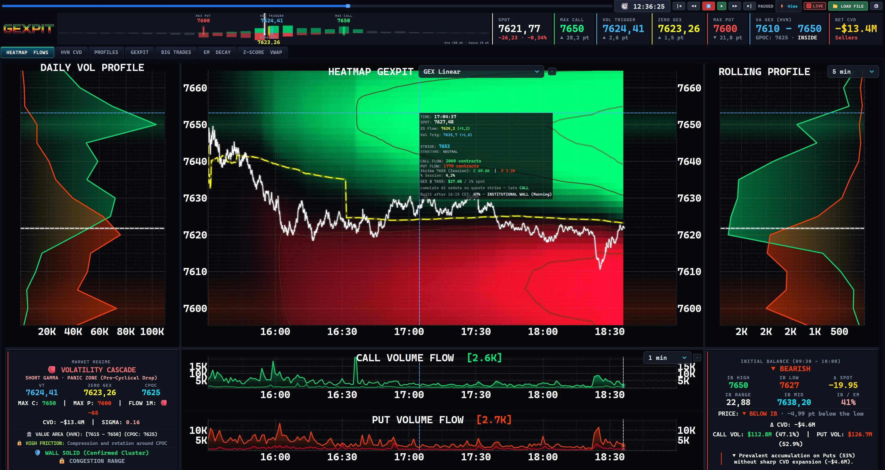
Normalize the GEX display against a rolling reference from 1 to 120 minutes. Call and Put use separate scales, helping the smaller side remain visible.
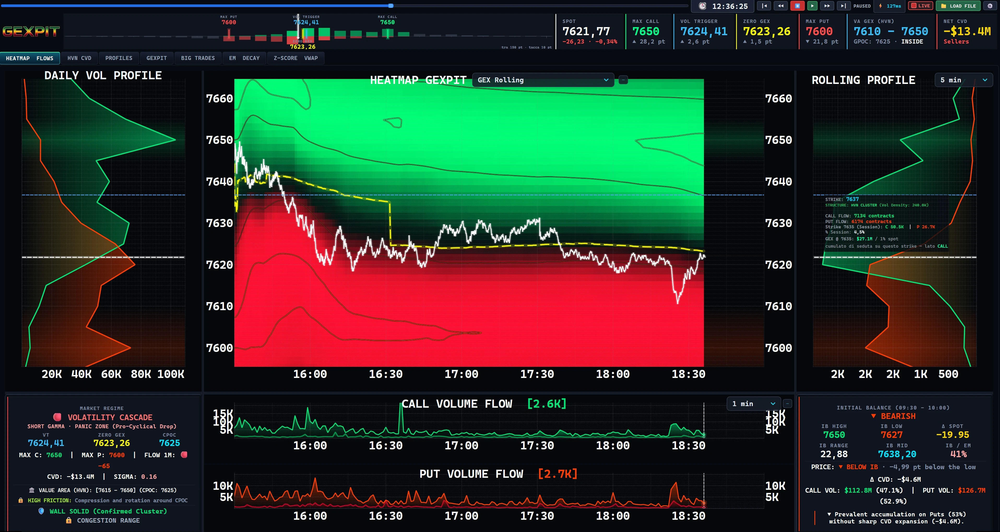
Combine the cumulative GEX structure with recent traded volume. Compare prominent levels with the activity still taking place there.
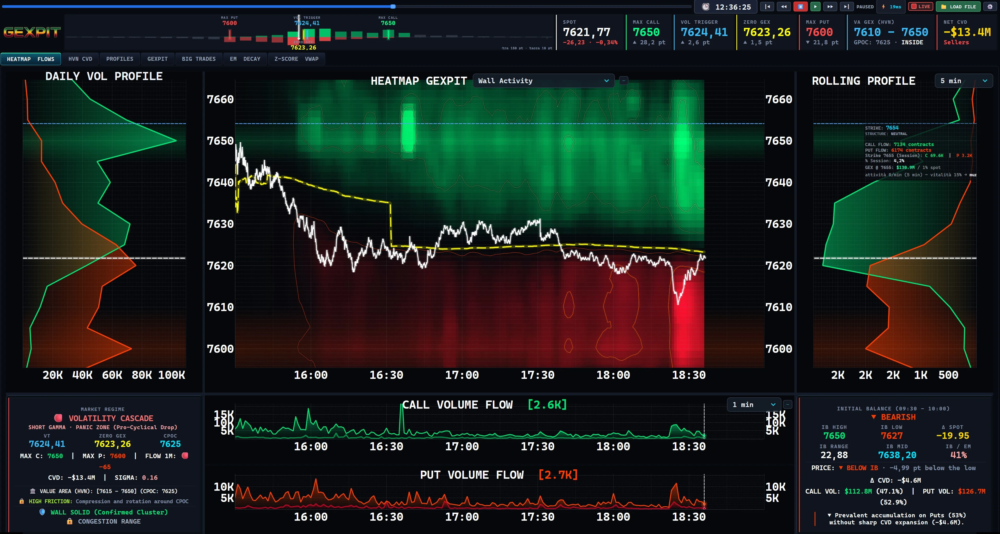
Focus on Gamma entering during the selected window. Green represents Call contributions and red Put contributions; red does not mean existing Gamma has been removed.
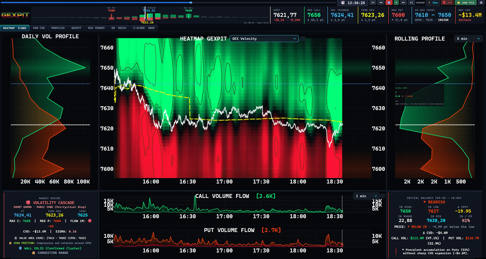
Use a fixed logarithmic scale for GEX magnitude. Compare values across time or sessions without each view rescaling to its own brightest cell.
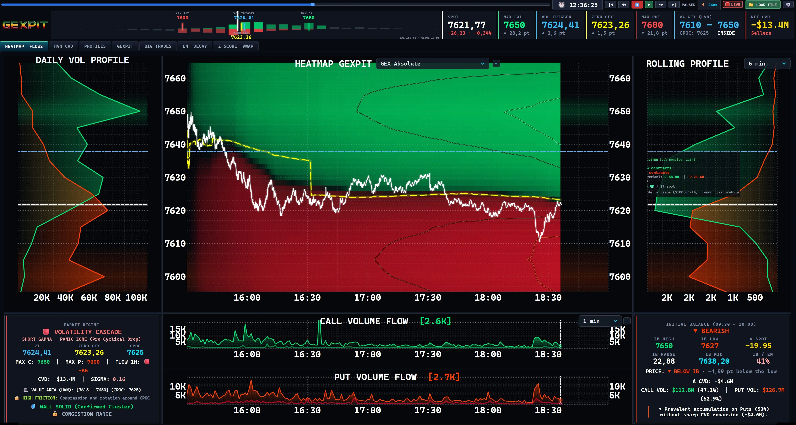
Weight relative GEX by the logarithm of recent volume at each strike. The view highlights the combination of exposure and activity; it does not directly observe dealer hedging.
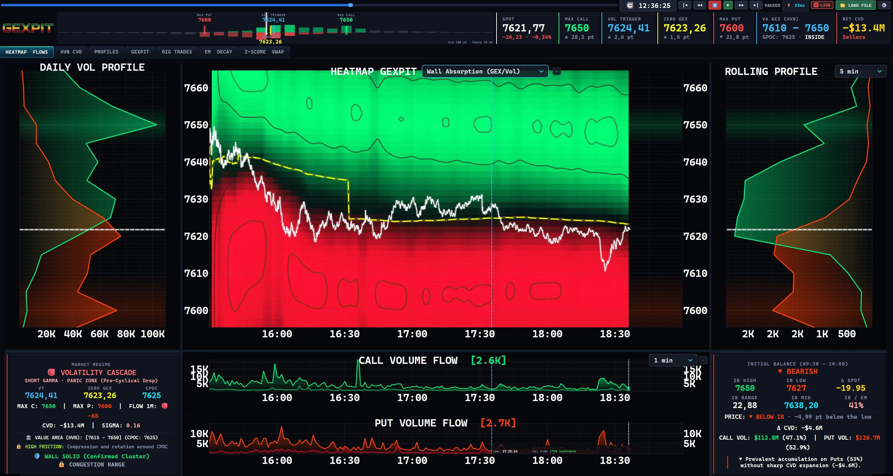
View cumulative Charm weighted by time remaining to the close. Use it as an additional model-based reference, not a guarantee that price will pin to a strike.
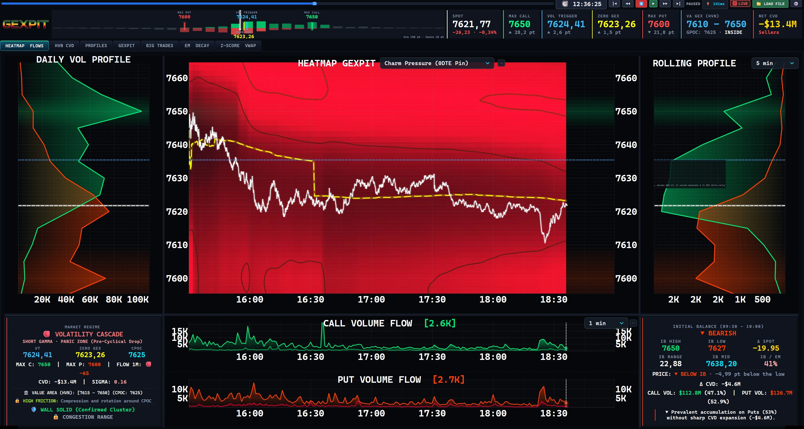
Start with the chain, then focus on the strikes relevant to your analysis.
Select a view. Click or tap the image to enlarge it.
Filter activity by contract volume or premium notional, then compare its location with spot. Separate Call and Put flow panels retain the broader context.
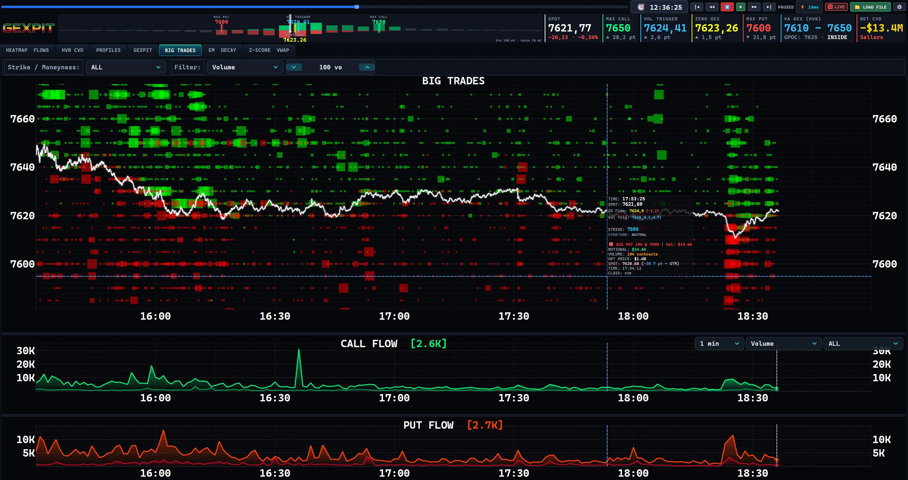
The NTM filter keeps strikes within ±5 points of spot. Switch between ALL, NTM, OTM and ITM to examine a different part of the chain. Size alone does not identify a participant or a multi-leg position.
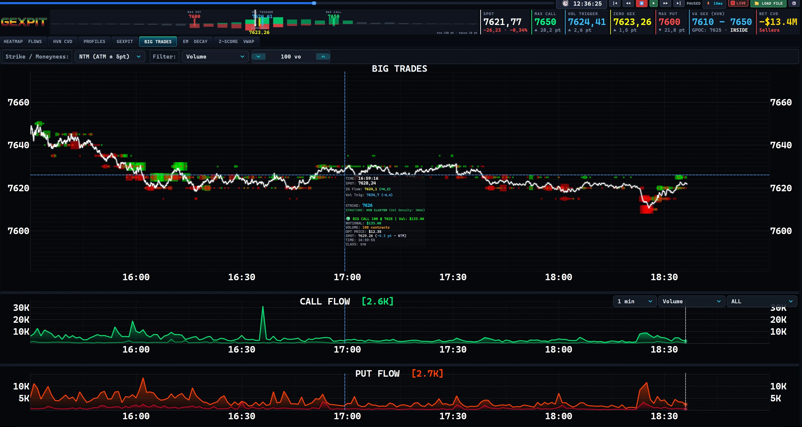
Compare recent volume with the full session. See whether activity stays on the same strikes or moves with price.
Keep rolling volume peaks, separate Call and Put CVD, and CVD Momentum beside spot. The view below uses contract volume; switch to premium notional for Monetary CVD.
The Rolling Volume Profile offers windows from 1 minute to 120 minutes. Rolling volume peaks on spot can be compared over intervals from 1 minute to the full session.
Switch between contract volume, premium notional and Delta Flow, with separate Call/Put or net CVD views. Monetary CVD weights classified flow by option premium notional; classification is an estimate, not a record of participant intent.
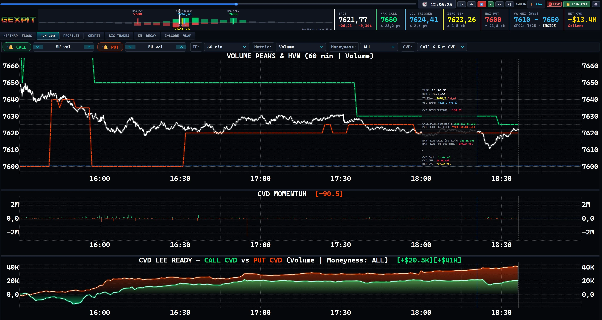
Enable volume alerts on spot and switch to Net CVD for a combined reading. CVD Momentum adds the recent change alongside the cumulative curve. Flow classification is an estimate, not a record of participant intent.
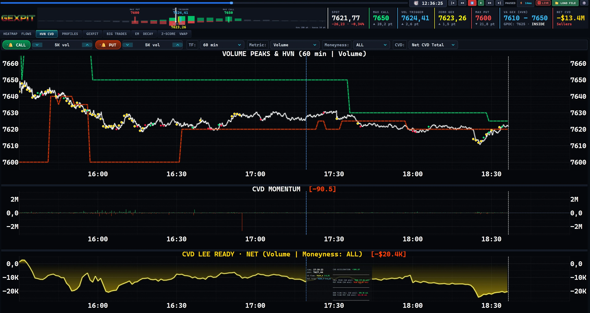
Compare the current profile with earlier readings instead of relying on a single snapshot.
Explore Dynamic GEX, Net GEX and separate Call/Put profiles. Historical markers help you see how the readings have changed.
Dynamic GEX revalues the full session volume at each strike with current model Gamma, using spot and the ATM Expected Move. It uses a flat ATM volatility assumption across strikes. Classic Net GEX instead accumulates flow contributions using Gamma at the time each contribution was recorded.
Net GEX and Dynamic GEX offer lookback markers at 1, 5, 15 and 30 minutes when that history is available. Split Total GEX does not use these markers. Dynamic GEX always uses the full session volume. Plotted references include Zero Gamma, Call Wall, Put Wall and Vol Trigger.
These are model-based references. They do not directly reveal dealer inventory or establish that a price level must hold.
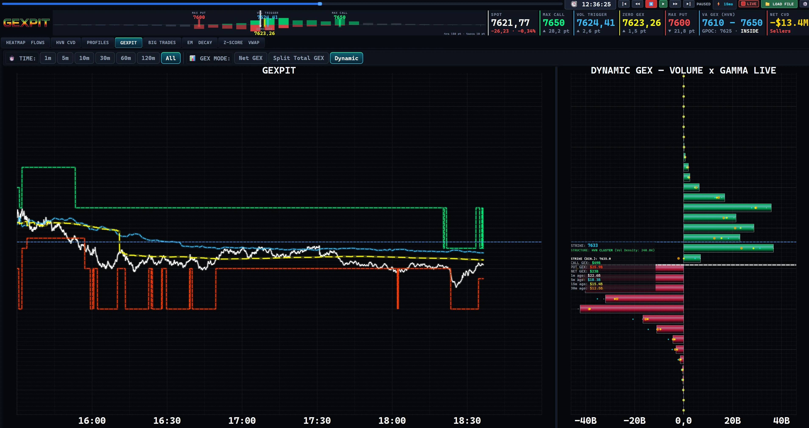
Switch from the net profile to separate Call / Put contributions, then compare the broader Greek exposures.
Select a view. Click or tap the image to enlarge it.
Compare the net profile with spot and the plotted reference levels. Classic Net GEX retains Gamma at the time each flow contribution was recorded.
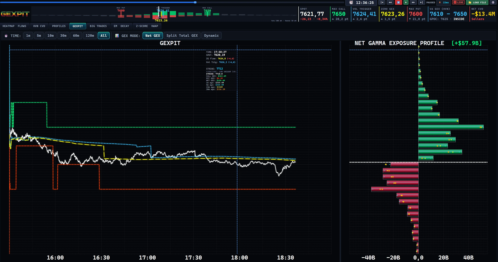
Keep Call and Put contributions separate. Two large opposing components can cancel in a net profile; the split view lets you inspect both.
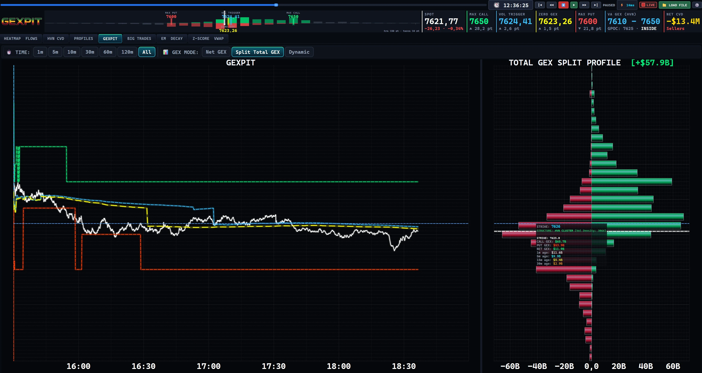
Read Volume, GEX, VEX, DEX and CEX in synchronized profiles. Change the time window to compare recent activity with the session; use stacked or split centered display modes.
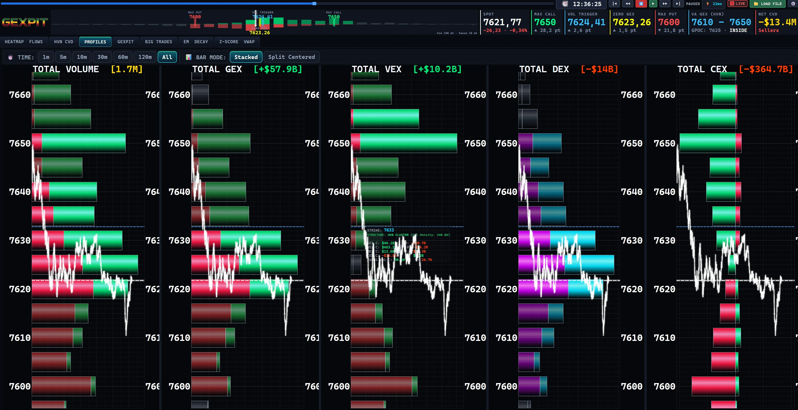
Put activity alongside the priced range, straddle decay and changes in ATM implied volatility.
Select a view. Click or tap the image to enlarge it.
Compare opening Expected Move and straddle bands, an intraday straddle corridor, and observed ATM straddle against theoretical decay. Expected Move and straddle price remain distinct measures.
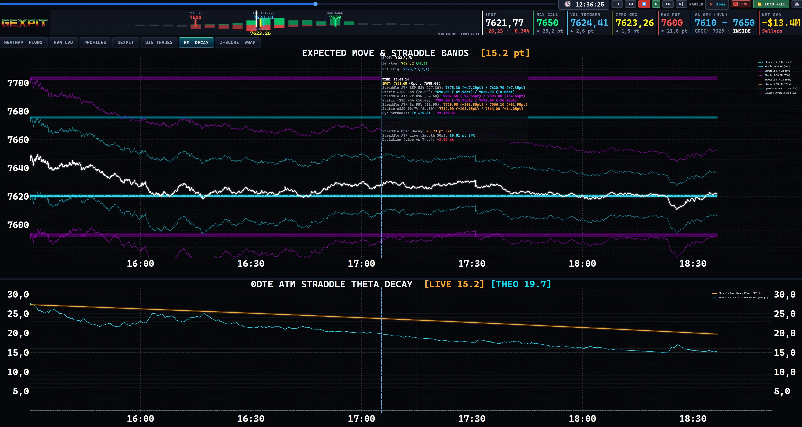
Compare 30-minute ATM IV Z-scores, including separate Call and Put readings, with minute-level volume. Optional OI-VWAP, C-GAMMA, C-VOL and C-DELTA overlays add options-derived reference lines. OI-VWAP is synthetic: it is neither an ES futures VWAP nor a measurement of open interest.
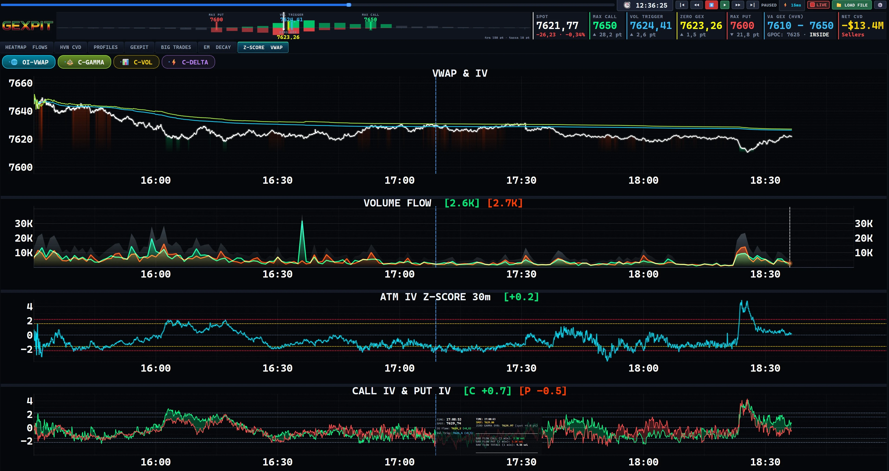
Return to a moment in your recorded session. Pause, slow down and compare price, flow and exposure using the same analytical workspace.
Recorded replay demonstration. Pause or expand the video to inspect the interface.
The GEXPIT Extractor collects IBKR data and writes the local session files. The desktop cockpit reads those files for live analysis and historical replay. Replay at selectable speeds, pause at a point of interest, or revisit an earlier part of the live session. Re-enable LIVE to return to incoming data.
Replay helps you review what was recorded. It is not, by itself, a backtest or proof that a trading strategy is profitable.
Explore live streams, session recordings and platform videos on the GEXPIT YouTube channel.
GEXPIT brings SPX options activity into view. How you express a trade depends on your instrument, strategy and risk controls.
Compare flow, modeled exposure, implied volatility and straddle behavior as context for your options analysis and session review.
Use SPX options activity as an additional layer of context for your futures decisions. GEXPIT's SPX views do not replace an ES order book or ES execution feed.
Feed observations, classified flow and modeled exposure are different layers. Call/Put volume alone does not reveal a participant's full position, including multi-leg trades. GEXPIT supports analysis; trading results depend on the strategy, execution, costs and risk management.
You do not need to learn every view at once. Begin with setup and a clear question, then explore the tools in more depth.
Leave your email. Selected participants receive an invitation and activation instructions.
Install the desktop cockpit. For live analysis, configure the GEXPIT Extractor with IBKR and check your market data permissions. For replay, open a compatible recorded session.
Use setup instructions and explanatory videos to understand the tools and how to read a 0DTE session through them.
Report what works, what is unclear and what could improve. Access lasts 21 days from license activation.
You need a compatible Windows PC. Live analysis also requires the GEXPIT Extractor running with IBKR and the relevant market data permissions. Historical replay uses compatible local files without an active broker connection. Broker and market data charges are separate from GEXPIT access.
Selected participants receive 21 days of free access to use the platform and share practical feedback with its developer.
Discord access is reserved for invited participants. There is no public server signup.
21 days free
Leave your email to be considered for an invitation.
Your application is received for consideration. If selected, you will receive an invitation with activation instructions by email. Applying does not grant immediate access. The 21-day period starts when your license is activated.
Use the platform and share concrete observations: setup difficulties, unclear controls or readings, reproducible bugs, or suggestions tied to your workflow. You do not need to find a bug or invent a feature to contribute. Honest, specific feedback is what matters.
Free access ends after 21 days unless the developer grants an extension based on your contribution and ongoing testing needs. Without feedback, the free period is not renewed. Contributing does not guarantee an extension. Paid subscriptions will follow the invitation phase; pricing and terms will be provided before purchase.
Both can use SPX options activity as market context. GEXPIT analyzes SPX options; it is not an ES order-book feed. An options structure and a futures position have different exposures and risks, even when informed by the same market reading.
For live analysis, the GEXPIT Extractor connects to Interactive Brokers through TWS or IB Gateway with the relevant market data permissions. The cockpit reads the local files produced by the Extractor; it does not connect directly to the broker. Confirm your permissions and setup before starting live collection. IBKR and market data fees are separate from GEXPIT access.
GEXPIT is a local desktop application for a compatible Windows PC. This website works on desktop and mobile; the analytical platform runs on your PC. Check hardware suitability during onboarding, particularly if you run other trading applications alongside it.
No. Start with installation and a guided reading of one view. Instructions and explanatory videos help you understand the interface and how to examine 0DTE market activity. The tools still require learning; no indicator removes trading uncertainty.
Yes. Open compatible session files recorded by the GEXPIT Extractor for historical replay without an active broker connection. During live analysis, you can rewind the available session history and return to LIVE. An existing historical data library is not promised as part of early access.
Discord is reserved for invited participants. Access information is shared with invitees; there is no public invite link on the website.
No. GEXPIT is an analytical platform. Flow classification and exposure models have assumptions and limitations. A chart observation is not proof of a profitable trade, and the platform does not guarantee outcomes.
Apply for the 21-day program and help improve GEXPIT through practical use.
Apply for Early Access